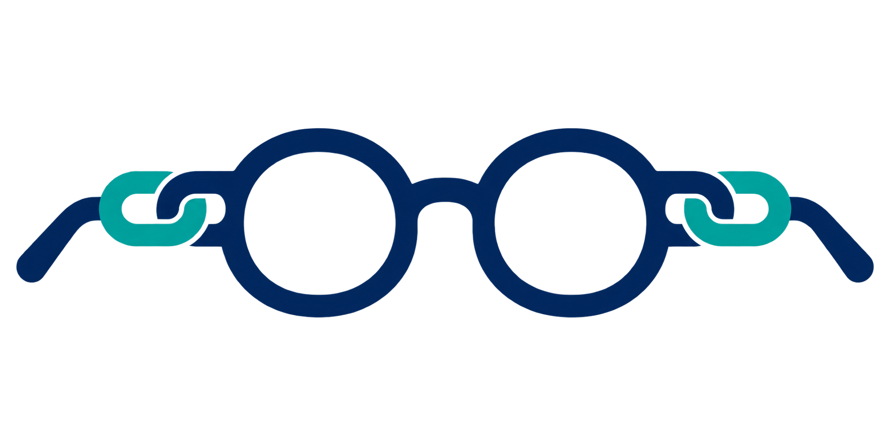

Trust
Lens
niche auto-detected by Jev
Scan this page
Boxes every element on the page, extracts 12 signals in code, then asks TypeSafe’s Jev four questions in one call. The score appears only after the whole page has been read.
Compare against competitors (optional)